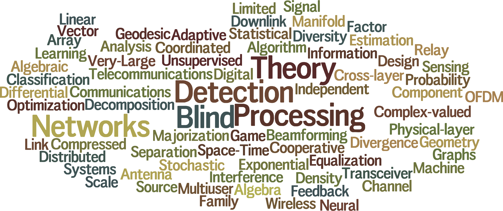
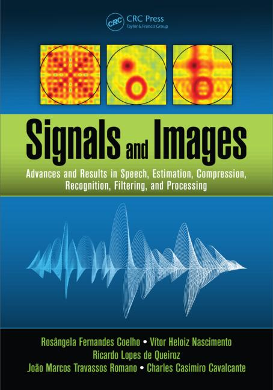
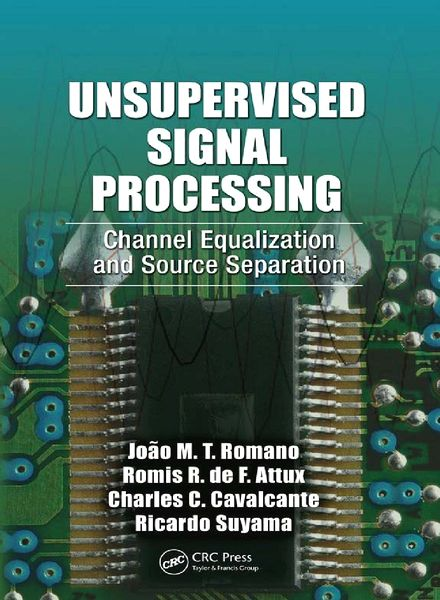
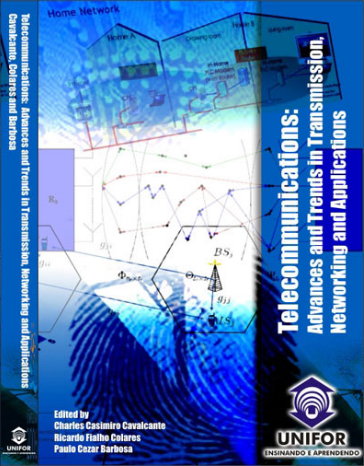

Books | Book Chapters | Journal Papers | Conference Papers | Lectures and Short Courses | Patents and Invention Disclosures
Charles Casimiro Cavalcante
Associate Professor
-

Books

R. F. Coelho, V. H. Nascimento, R. L. de Queiroz, J. M. T. Romano and C. C. Cavalcante (Orgs.), "Signals and Images: Advances and Results in Speech, Estimation, Compression, Recognition, Filtering, and Processing", 1. ed. Boca Raton, FL: CRC Press, 2015, ISBN 978-1498722360, DOI: 10.1201/b19385. Publisher or Amazon links.

J. M. T. Romano, R. R. F. Attux, C. C. Cavalcante and R. Suyama, "Unsupervised Signal Processing: Channel Equalization and Source Separation". 1. ed. Boca Raton, FL: CRC Press, 2010, ISBN 978-084-9337-512, DOI: 10.1201/b10370. Publisher or Amazon links.

Charles Casimiro Cavalcante, Ricardo Fialho Colares and Paulo Cezar Barbosa (Editors), Telecommunications: Advances and Trends in Transmission, Networking and Applications, Networking and Applications, ISBN: 85-98876-18-6, University of Fortaleza Press, 2006.
Book Chapters
- Lucas P. Damasceno, Allison Shafer, Nathalie Japkowicz, Charles C. Cavalcante and Zois Boukouvalas, "Efficient Multivariate Data Fusion for Misinformation Detection During High Impact Events", in Poncelet Pascal and Dino Ienco (Editors), Discovery Science (DS 2022). Lecture Notes in Computer Science (LNCS), vol 13601. pp. 253-268, Springer, Cham, 2022.
- Luiza H. F. de Andrade, Francisca L. J. Vieira, and Charles C. Cavalcante, "On Normalization Functions and φ-Families of Probability Distributions", in Frank Nielsen (Editor), Progress in Information Geometry: Theory and Applications, Springer, pp. 19-39, 2021.
- Diego P. Sousa, Guilherme A. Barreto, Charles C. Cavalcante and Cláudio M. S. Medeiros, "LVQ-type Classifiers for Condition Monitoring of Induction Motors: A Performance Comparison". In: Vellido A., Gibert K., Angulo C., Martín Guerrero. (Org.). 1ed.Cham: Springer, 2019, v. 976, pp. 130-139.
- F. L. J. Vieira, R. F. Vigelis , L. H. F. de Andrade and C. C. Cavalcante, "Deformed Exponential and the Behavior of the Normalizing Function". Lecture Notes in Computer Science. 1ed.Cham: Springer International Publishing, 2019, v. 11712, p. 271-278.
- R. F. Vigelis, L. H. F de Andrade and Charles C. Cavalcante, "On the Existence of Paths Connecting Probability Distributions". In: Frank Nielsen; Frederic Barbaresco. (Org.). Lecture Notes in Computer Science. 1ed.Cham: Springer International Publishing, 2017, v. 10589, p. 801-808.
- L. H. F de Andrade, R. F. Vigelis, F. L. J. Vieira and C. C. Cavalcante, "Normalization and φ-function: Definition and Consequences". In: Frank Nielsen; Frederic Barbaresco. (Org.). Lecture Notes in Computer Science. 1ed.Cham: Springer International Publishing, 2017, v. 10589, p. 231-238.
- R. F. Vigelis and C. C. Cavalcante, "Information Geometry: An Introduction to New Models for Signal Processing", chapter in Coelho et al (Org.), Signals and Images, CRC Press, pp. 455-491, 2015.
- R. F. Vigelis, David C. de Souza and C. C. Cavalcante, "New Metric and Connections in Statistical Manifolds", chapter in Frank Nielsen; Frédéric Barbaresco. (Org.). Geometric Science of Information: Second International Conference, GSI 2015 (Lecture Notes in Computer Science). 1ed.: Springer Berlin Heidelberg, v. 9389, pp. 222-229, 2015.
- L. M. C. Sousa, T. F. Maciel and C. C. Cavalcante, "Precoder Design for Coordinated Multipoint Systems", chapter in Francisco Rodrigo Porto Cavalcanti. (Org.). Resource Allocation and MIMO for 4G and Beyond. 1ed.New York: Springer New York, 2014.
- I. M. Guerreiro, C. C. Cavalcante and D. Hui, "Distributed Optimization Techniques in Wireless Communication Networks", chapter in Francisco Rodrigo Porto Cavalcanti. (Org.). Resource Allocation and MIMO for 4G and Beyond. 1ed.New York: Springer New York, 2014.
- Rui F. Vigelis and Charles C. Cavalcante, The Δ2-Condition and φ-Families of Probability Distributions, In: Nielsen, F., Barbaresco, F. (eds), Geometric Science of Information. GSI 2013. Lecture Notes in Computer Science, vol 8085. Springer, Berlin, Heidelberg. DOI: 10.1007/978-3-642-40020-9_81
- Darlan Cavalcante Moreira, Walter da Cruz Freitas Júnior, Cibelly Azevedo de Araújo and Charles Casimiro Cavalcante, "Link Adaptation for MIMO-OFDM Systems", Chapter 10, pp. 393-419. In Francisco Rodrigo Porto Cavalcanti and Sören Andersson (Eds.), Optimizing Wireless Communication Systems, ISBN: 978-1-4419-0154-5, Springer, 2009. Book page.
- Rui Facundo Vigelis, Darlan Cavalcante Moreira and Charles Casimiro Cavalcante, "Channel Estimation for OFDM Systems: Techniques, Algorithms, and Performance", Chapter 9, pp. 353-392. In Francisco Rodrigo Porto Cavalcanti and Sören Andersson (Eds.), Optimizing Wireless Communication Systems, ISBN: 978-1-4419-0154-5, Springer, 2009. Book page.
- Charles Casimiro Cavalcante and João Marcos Travassos Romano, "On the Relationships Between MMSE and Information-Theoretic-Based Blind Criterion for Minimum BER Filtering", Lecture Notes on Computer Science (LNCS), Springer, Vol. 5441, Pages 17-24, DOI: 10.1007/978-3-642-00599-2_3, 2009.
- Ricardo Suyama, Leonardo Tomazeli Duarte, Aline de Oliveira Neves, Rafael Ferrari, Romis Ribeiro de Faissol Attux, Charles Casimiro Cavalcante, Cynthia Junqueira and João Marcos Travassos Romano, "Unsupervised Signal Processing: Applications and Trends", Chapter 2, pages 29-55. In C. C. Cavalcante, R. F. Colares and P. C. Barbosa (Eds.), Telecommunications: Advances and Trends in Transmission, Networking and Applications, ISBN: 85-98876-18-6, University of Fortaleza Press, 2006.
Journal Papers
- Diego Sousa, Rong Du, José Mairton Barros da Silva Jr, Charles Casimiro Cavalcante, and Carlo Fischione, Leakage detection in water distribution networks using machine-learning strategies, Water Supply, ws2023054, 2023. DOI: 10.2166/ws.2023.054
- Fazal-E-Asim, Charles C. Cavalcante, Felix Antreich, André L. F. de Almeida, and Josef A. Nossek, "Efficient Hybrid A/D Beamforming for Millimeter-Wave Systems Using Butler Matrices", IEEE Transactions on Wireless Communications, vol. 22, no. 2, pp. 1001-1013, February 2023. DOI: 10.1109/TWC.2022.3200298
- Fazal-E-Asim, A. L. F. de Almeida, F. Antreich, M. Haardt and Charles C. Cavalcante, "Kronecker Product Based Space-Time Block Codes", IEEE Wireless Communications Letters, vol. 11, no. 2, pp. 386-390, February 2022, DOI: 10.1109/LWC.2021.3129460.
- Fazal-E-Asim, Felix Antreich, Charles C. Cavalcante, André L. F. de Almeida, and Josef A. Nossek, "Two-Dimensional Channel Parameter Estimation for Millimeter-Wave Systems using Butler Matrices", IEEE Transactions on Wireless Communications, vol. 20, no. 4, pp. 2670-2684, April 2021. DOI: 10.1109/TWC.2020.3043958.
- Fazal-E-Asim, Felix Antreich, Charles C. Cavalcante, André L. F. de Almeida and Josef A.Nossek, "Channel Parameter Estimation for Millimeter-Wave Cellular Systems with Hybrid Beamforming", Signal Processing, Vol. 176, Pages: 107715, November, 2020.
- Fazal-E-Asim, André L. F. de Almeida, Martin Haardt, Charles C. Cavalcante and Josef A. Nossek, "Rank-one Detector for Kronecker-Structured Constant Modulus Constellations", IEEE Signal Processing Letters, Vol. 57, Pages: 1420-1424, 2020.
- Rui Facundo Vigelis, Luiza H. F. de Andrade and Charles C. Cavalcante, "Conditions for the Existence of a Generalization of Rényi Divergence", Physica A: Statistical Mechanics and its Applications, vol. 558, ID: 124953, 2020.
- L. H. F. Andrade, R. F. Vigelis and Charles C. Cavalcante, "A generalized Quantum Relative Entropy", Advances in Mathematics of Communications, August, Vol. 14, Issue 3, pp. 413-422, 2020. DOI: 10.3934/amc.2020063
- R. F. Vigelis, L. H. F. de Andrade and C. C. Cavalcante, "Properties of a Generalized Divergence Related to Tsallis Generalized Divergence", IEEE Transactions on Information Theory, vol. 66, no. 5, pp. 2891-2897, May 2020.
- Xingwang Li, Qunshu Wang, Hongxing Peng, Hui Zhang, Dinh-Thuan Do, K. M. Rabie, R. Kharel and C. C. Cavalcante, "A Unified Framework for HS-UAV NOMA Networks: Performance Analysis and Location Optimization", in IEEE Access, vol. 8, pp. 13329-13340, 2020.
- Yanliang Zhang, Xingwang Li, Guoying Zhao, Bing Lu and Charles C. Cavalcante, "Signal Reconstruction of Compressed Sensing Based on Alternating Direction Method of Multipliers", Circuits, Systems and Signal Processing, Volume 39, Pages 307–323, 2020.
- F. L. J. Vieira, L. H. F. de Andrade, R. F. Vigelis and C. C. Cavalcante, "A Deformed Exponential Statistical Manifold", Entropy, v. 21, p. 496, 2019.
- Xingwang Li, Mengyan Huang, Jingjing Li, Qingping Yu, Khaled Rabie and Charles C. Cavalcante, "Secure Analysis of Multi-Antenna Cooperative Networks with Residual Transceiver HIs and CEEs", IET Communications, v. 13, p. 2649-2659, 2019.
- Yosbel R. Ortega , Igor M. Guerreiro, Dennis Hui, Charles C. Cavalcante and F. Rodrigo P. Cavalcanti, "Supervised learning and graph signal processing strategies for beam tracking in highly directional mobile communications", Transactions on Emerging Telecommunications Technologies, v. 30, p. e3687, 2019.
- Ana Flávia P. Rodrigues, Charles C. Cavalcante, Vicente L. Crisóstomo, "A projection pricing model for non-Gaussian financial returns", Physica A: Statistical Mechanics and its Applications, Volume 534, 122181, ISSN 0378-4371, 2019
- Xinji Tian, Qianqian Li, Xingwang Li, Hui Zhang, Khaled Rabie, Charles Casimiro Cavalcante, "Performance Analysis of Two-Way Relay NOMA Systems with Hardware Impairments and Channel Estimation Errors", KSII Transactions on Internet and Information Systems, v. 13, p. 5370-5393, 2019.
- Ana Flávia P. Rodrigues and Charles C. Cavalcante, "Principal Curves for Statistical Divergences and an Application to Finance", Entropy, 2018, 20 (5), 333; DOI: 10.3390/e20050333.
- Jin Jin, Xiang-Chuan Gao, Xingwang Li, Charles C. Cavalcante and Lihua Li, "Low-Overhead Feedback Topology Design for the K-User MIMO Interference Alignment", KSII Transactions on Internet and Information Systems, Vol. 12, No.11, pp. 5304-5322, 2018. DOI: 10.3837/tiis.2018.11.008.
- Xueyan Chen, Li Guo, Xingwang Li, Chao Dong, Jiaru Lin and Charles C. Cavalcante, "Full-duplex wireless-powered jammer aided secure communication for cognitive radio networks", Physical Communication, Volume 31, December, Pages 103-112, 2018. DOI: 10.1016/j.phycom.2018.10.003.
- Chao Deng, Xiaoya Zhao, Di Zhang, Xingwang Li, Jingjing Li and Charles Casimiro Cavalcante, "Performance Analysis of NOMA-based Relaying Networks with Transceiver Hardware Impairments", KSII Transactions on Internet and Information Systems, vol. 12, no. 9, pp. 4295-4316, 2018. DOI: 10.3837/tiis.2018.09.010
- A. F. P. Rodrigues, I. M. Guerreiro and Charles Casimiro Cavalcante, "Deformed Exponentials and Portfolio Selection", International Journal of Modern Physics C: Computational Physics and Physical Computation, Volume 29, Number 3, Page 1850029, 2018.
- Luiza H.F. de Andrade, Francisca L. J. Vieira, Rui F. Vigelis and Charles C. Cavalcante, "Mixture and Exponential Arcs on Generalized Statistical Manifold", Entropy, 20 (3), 147, 2018. DOI:10.3390/e20030147
- Xueyan Chen, Li Guo, Chao Dong, Jiaru Lin, Xingwang Li and Charles C. Cavalcante, "Probabilistic Constrained Approach for Distributed Robust Beamforming Design in Cognitive Two-way Relay Networks", KSII Transactions on Internet and Information Systems, vol. 12, no. 1, pp. 21-40, 2018. DOI: 10.3837/tiis.2018.01.002
- Xing-wang Li, Ya Li, Lihua Li, Jin Jin and Charles C. Cavalcante, "Performance analysis of distributed MIMO with ZF receivers over gamma shadowed correlated Rician fading channels", Physical Communication, Volume 25, Part 1, December, Pages 54-65, 2017. DOI: 10.1016/j.phycom.2017.08.013
- Chao Deng, Zhi-heng Wang, Xing-wang Li, Hui-na Li and Charles C. Cavalcante, "An Improved Remote Sensing Image Fusion Algorithm Based on IHS Transformation", KSII Transactions on Internet and Information Systems, Volume 11, No. 3, pp. 1633-1649, 2017. DOI: 10.3837/tiis.2017.03.021
- David C. de Souza, Rui F. Vigelis and Charles C. Cavalcante, "Geometry Induced by a Generalization of Rényi Divergence", Entropy, Volume 18, Issue 11, Page 407; doi:10.3390/e18110407, 2016.
- XingWang Li, Junfeng Wang, Lihua Li, and Charles C. Cavalcante, "Capacity Bounds on the Ergodic Capacity of Distributed MIMO Systems over K Fading Channels", KSII Transactions on Internet and Information Systems, Volume 10, No. 7, July 31, 2016.
- A. A. P. Guimarães, M. Kountouris and C. C. Cavalcante, "Bounds and approximations on the ergodic mutual information of spatially correlated Nakagami-m MIMO channels", Transactions on Emerging Telecommunications Technologies, Volume 27, Issue 6, pages 842–856, June 2016.
- R. F. Vigelis and C. C. Cavalcante, "Smoothness of the Orlicz norm in Musielak-Orlicz function spaces", Mathematische Nachrichten, Volume 287, Issue 8-9, p. 1025-1041, July 2014.
- F. R. Guimarães, D. B. da Costa, T. Tsiftsis, C. C. Cavalcante and G. Karagiannidis, "Multi-User and Multi-Relay Cognitive Radio Networks Under Spectrum Sharing Constraints", IEEE Transactions on Vehicular Technology, v. 63, p. 433-439, 2014.
- I. M. Guerreiro, C. C. Cavalcante and D. Hui, "Precoder selection scheme based on message-passing approach: a practical perspective", IOP Conference Series: Materials Science and Engineering, v. 67, p. 012023, 2014.
- I. M. Guerreiro, D. Hui and C. C. Cavalcante, "A distributed approach to precoder selection using factor graphs for wireless communication networks", EURASIP Journal on Advances in Signal Processing, v. 2013, p. 83, 2013.
- R. F. Vigelis and C. C. Cavalcante, "On φ-Families of Probability Distributions", Journal of Theoretical Probability, v. 26, p. 870-884, 2013.
- A. A. P. Guimarães and C. C. Cavalcante , "Upper Bound of Ergodic Capacity for MIMO Channels with Ricean-Fading using Majorization Theory", Journal of Communication and Information Systems, v. 27, p. 10-14, 2012.
- D. B. da Costa, S. Aïssa and C. C. Cavalcante, "Performance Analysis of Partial Relay Selection in Cooperative Spectrum Sharing Systems", Wireless Personal Communications, v. 64, p. 79-92, 2012.
- W. C. Freitas Jr., D. C. Moreira, C. C. Cavalcante and A. L. F. de Almeida, "Backward Recursion in Layered Space-Time Non-linear Interference Cancellation Detectors", Journal of Communication and Information Systems, v. 2011, p. 30-34, 2011.
- C. C. Cavalcante and G. A. Barreto, "Recuperação de Fontes e Análise por Componentes Independentes: Conceitos, Fundamentos e Aplicações em Linguística" (Source Recovering and Independent Component Analysis: Concepts, Fundamentals and Applications in Linguistics), Revista de Letras (Fortaleza), v. 30, p. 58-69, 2011.
- A. Macílio P. Lucena, João Cesar M. Mota and Charles Casimiro Cavalcante, "Optimum Detection of Non-Orthogonal QAM Signals with Spectral Overlapping", IET Communications, Volume 3, Issue 2, Pages 249-256, DOI: 10.1049/iet-com:20080157, 2009.
- C. C. Cavalcante and J. M. T. Romano, "On the Relationships Between MMSE and Information-Theoretic-Based Blind Criterion for Minimum BER Filtering. Lecture Notes in Computer Science, v. 5441, p. 17-24, 2009, DOI: 10.1007/978-3-642-00599-2_3.
- F. R. P. Cavalcanti, W. C. freitas Jr. and C. C. Cavalcante, "Sistemas de Comunicações Móveis de Próxima Geração Multiantenas e Multiportadoras", Telecomunicações, v. 12, p. 1-20, 2009.
- Charles Casimiro Cavalcante, Danilo Zanatta Filho and João Marcos Travassos Romano, "Multiuser Processing Using Blind Source Separation Methods", European Transactions on Telecommunications, Wiley, Volume 19, Issue 7, Pages 827-836, November, DOI: 10.1002/ett.1327, 2008.
- Ricardo Suyama, Leonardo Tomazeli Duarte, Rafael Ferrari, Leandro Elias Paiva Rangel, Romis Ribeiro de Faissol Attux, Charles Casimiro Cavalcante, Fernando José Von Zuben and João Marcos Travassos Romano, "A Nonlinear-Prediction Approach to the Blind Separation of Convolutive Mixtures", EURASIP Journal on Advances in Signal Processing, Special Issue on Advances on Blind Source Separation, Vol. 2007, Article ID 43860, 9 pages, doi:10.1155/2007/43860, 2007.
- Charles Casimiro Cavalcante and João Marcos T. Romano, "Multi-user pdf estimation based criteria for adaptive blind separation of discrete sources", Signal Processing, Special Issue on Information Theoretic Signal Processing, vol. 85, pp. 1059-1072, May, DOI: 10.1016/j.sigpro.2004.11.023, 2005.
- Charles Casimiro Cavalcante, F. Rodrigo P. Cavalcanti and João Cesar M. Mota, "Adaptive Blind Multiuser Separation Criterion Based on Log-Likelihood Maximisation", IEE Electronics Letters, vol. 38, No. 20, pp. 1231-1233, September, DOI: 10.1049/el:20020785, 2002.
Conference Papers
- Rafael M. Albuquerque, Charles C. Cavalcante and Jorge H. S. de Lira, "Redução da Quantidade de Itens para Estimação de Proficiência em Teste Adaptativo Computadorizado com Filtro de Kalman", XXXIII Simpósio Brasileiro de Informática na Educação (SBIE), Manaus-AM, Brazil, November 16th-19th, 2022.
- Rafael Carvalho Bluhm and Charles Casimiro Cavalcante, "Wirtinger Calculus and Complex Natural Gradient Algorithm", Proc. of XL Simpósio Brasileiro de Telecomunicações e Processamento de Sinais (SBrT2022), Santa Rita do Sapucaí-MG, Brazil, 2022.
- Ezequias de Santana Jr, Igor M. Guerreiro, Yuri C. B. Silva and Charles Casimiro Cavalcante, "On the Robustness of Deep Learning Based Beamforming for MU-MISO Systems'', Proc. of XXXIX Simpósio Brasileiro de Telecomunicações e Processamento de Sinais (SBrT2021), Fortaleza, 2021.
- Antônio Alisson Pessoa Guimarães and Charles Casimiro Cavalcante, "The Shannon and Rényi Differential Entropies of the Weighted Sum Of Squared Nakagami-m Random Variables", Proc. of XXXIX Simpósio Brasileiro de Telecomunicações e Processamento de Sinais (SBrT2021), Fortaleza, 2021.
- Lucas Damasceno, Charles Cavalcante, Tülay Adalı and Zois Boukouvalas, "Independent Vector Analysis Using Semi-Parametric Density Estimation Via Multivariate Entropy Maximization", 2021 IEEE International Conference on Acoustics, Speech and Signal Processing (ICASSP 2021), Toronto, Canada, 2021.
- Daniel C. Araújo, Guillaume Ferré, Charles Casimiro Cavalcante and Igor M. Guerreiro, "A Spectral Efficiency Enhancement for Chirp Spread Spectrum Downlink Communications", IEEE 12th Latin-American Conference on Communications (LATINCOM 2020),Santo Domingo, Dominican Republic, 2020.
- Fazal-E- Asim, André L. F. de Almeida, Martin Haardt, Charles Casimiro Cavalcante and Josef A. Nossek, "Multi-linear Encoding and Decoding for MIMO Systems", IEEE 11th Sensor Array and Multichannel Signal Processing Workshop (SAM 2020), Hangzhou, China, 2020.
- Darlan Cavalcante, Igor Guerreiro, Wanlu Sun, Charles Casimiro Cavalcante and Diego A. Sousa, "QoS Predictability in V2X Communication with Machine Learning", IEEE 91st Vehicular Technology Conference: VTC2020-Spring, Antwerp, Belgium, 2020.
- Sara Akodad, Solene Vilfroy, Lionel Bombrun, Charles C. Cavalcante, Christian Germain and Yannick Berthoumieu, "An Ensemble Learning Approach for the Classification of Remote Sensing Scenes Based on Covariance Pooling of CNN Features", 27th European Signal Processing Conference (EUSIPCO 2019), La Coruña, Spain, September 2nd-6th, 2019.
- Fazal-E-Asim, Josef A. Nossek, Felix Antreich, Charles C. Cavalcante and André L. F. de Almeida, "Maximum Likelihood Channel Estimation for Millimeter-Wave MIMO Systems with Hybrid Beamforming", 23rd International ITG Workshop on Smart Antennas (WSA 2019), Vienna, Austria, April 24th-26th, 2019.
- Diego P. Sousa, Charles C. Cavalcante, Guilherme A. Barreto and Cláudio M. S. Medeiros, "Uma análise heurística baseada em protótipos para o monitoramento de estados de motores de indução", XIV Congresso Brasileiro de Inteligência Computacional (CBIC 2019), Belém-PA, Brazil, November 3rd,-6th, 2019.
- Júlio Peixoto da Silva Jr, Guilherme de Alencar Barreto and Charles Casimiro Cavalcante, "Detecção de Crises Epiléticas Usando o Modelo ANFIS e Coeficientes LPC: Uma Visão Crítica", V Congresso Brasileiro de Sistemas Fuzzy (CBSF 2018), Fortaleza-CE, July 4th-6th, 2018.
- Paolo Zanini, Salem Said, Charles Casimiro Cavalcante and Yannick Berthoumieu, "Stochastic EM Algorithm for Mixture Estimation on Manifolds", IEEE International Workshop on Computational Advances in Multi-Sensor Adaptive Processing (CAMSAP 2017), December 10th-13th, Curaçao, Dutch Antilles, 2017.
- I. M. Guerreiro, D. Hui and C. C. Cavalcante, "A Factor Graph Approach to Nonuniform Power Distribution", XXXV Simpósio Brasileiro de Telecomunicações e Processamento de Sinais (SBrT2017), São Pedro, 2017.
- R. F. Vigelis, B. K. S. Lima and C. C. Cavalcante, "On OFDM Systems under WSS-US Channels", XXXV Simpósio Brasileiro de Telecomunicações e Processamento de Sinais (SBrT2017), São Pedro, 2017
- I. M. Guerreiro, J. Axnäs, D. Hui and C. C. Cavalcante, "Graph-based power-efficient beam sweep for initial synchronization", IEEE 17th International Workshop on Signal Processing Advances in Wireless Communications (SPAWC), Edinburgh, 2016.
- D. C. de Souza, C. C. Cavalcante and R. F. Vigelis, "Modified maximum likelihood estimator", IEEE Sensor Array and Multichannel Signal Processing Workshop (SAM 2016), Rio de Janeiro, 2016.
- R. Mowakeaa, Z. Boukouvalas, C. C. Cavalcante and T. Adalı, "On the characterization, generation, and efficient estimation of the complex multivariate GGD", IEEE Sensor Array and Multichannel Signal Processing Workshop (SAM 2016), Rio de Janeiro, 2016.
- I. M. Guerreiro, D. Hui and C. C. Cavalcante, "Adaptation with reduced-size message pass to precoder selection in multi-cell MIMO systems", IEEE Sensor Array and Multichannel Signal Processing Workshop (SAM 2016), Rio de Janeiro, 2016.
- D. M. S. Santos, D. C. Araújo and C. C. Cavalcante, "Seleção de Pilotos em Sistemas de Múltiplas Antenas para Maximização da SNR Recebida", XXXIV Simpósio Brasileiro de Telecomunicações e Processamento de Sinais (SBrT2016), Santarém, PA, v. 1. p. 423-427, 2016.
- I. M. Guerreiro, J. Axnäs, D. Hui and C. C. Cavalcante, "Power-Efficient Beam Sweeping for Initial Synchronization in mm-Wave Wireless Networks", 16th International Workshop on Signal Processing Advances in Wireless Communications (SPAWC2015). Stockholm, Sweden, 2015.
- H. M. J. Zacarias, J. A. L. Marques, J. P. V. Madeiro, P. C. Cortez and C. C. Cavalcante, "Detrended Fluctuation Analysis como Ferramenta para Avaliação do Comportamento da Frequência Cardíaca Fetal em Exames Cardiotocográficos", XXIV Congresso Brasileiro de Engenharia Biomédica (CBEB2014), Uberlândia, v. 1. p. 2912-2915, 2014.
- A. A. P. Guimarães, M. Kountouris and C. C. Cavalcante, "A Lower Bound on the Ergodic Capacity of Jointly Correlated Rician Fading Channels", IEEE 25th Annual International Symposium on Personal, Indoor, and Mobile Radio Commuinications (PIMRC 2014), Washington, DC, p. 528-532, 2014.
- I. M. Guerreiro, D. Hui and C. C. Cavalcante, "A Message-passing Approach to Precoder Selection in Wireless Communication Networks", XXXI Simpósio Brasileiro de Telecomunicações (SBrT 2013), Fortaleza, 2013.
- F. R. Guimarães, D. B; da Costa and C. C. Cavalcante, "Redes Cooperativas Cognitivas Multi-Usuário Com Compartilhamento Espectral", XXXI Simpósio Brasileiro de Telecomunicações (SBrT 2013), Fortaleza, 2013.
- F. R. Guimarães, D. B; da Costa and C. C. Cavalcante, "Seleção De Relay Em Sistemas Cooperativos Cognitivos Com Múltiplos Usuários Primários", XXXI Simpósio Brasileiro de Telecomunicações (SBrT 2013), Fortaleza, 2013.
- R. N. Sá Netto and C. C. Cavalcante, "Feedback Reduction of Spatially Multiplexed MIMO Systems Using Compressive Sensing", XXX Simpósio Brasileiro de Telecomunicações (SBrT2012), Brasília, 2012.
- A. A. P. Guimarães and C. C. Cavalcante, "An Upper-Bound on the Ergodic Capacity of Rayleigh-Fading MIMO Channels using Majorization Theory", XXX Simpósio Brasileiro de Telecomunicações (SBrT2012), Brasília, 2012.
- C. C. Cavalcante, R. N. Sá Netto and W. C. Freitas Jr., "Sistemas de Informação MIMO: Desempenho, Limitantes e Perspectivas", XXX Simpósio Brasileiro de Telecomunicações (SBrT2012), Brasília, 2012.
- R. N. Sá Netto and C. C. Cavalcante, "Quantization and noise impact over feedback reduction of MIMO systems using compressive sensing", International Symposium on Wireless Communication Systems (ISWCS), pp. 396-400, Paris, France, 2012.
- A. A. P. Guimarães and C. C. Cavalcante, "An analytical closed-form lower-bound on ergodic capacity of correlated Rayleigh-fading MIMO channels", International Symposium on Wireless Communication Systems (ISWCS), pp. 681-685, Paris, France, 2012.
- I. M. Guerreiro, D. Hui, G. Jiann-Ching and C. C. Cavalcante, "A graph-based approach for distributed parameter coordination in wireless communication networks", 2012 IEEE Globecom Workshops (GC Wkshps), Anaheim, 2012.
- R. T. S. Carvalho, C. C. Cavalcante and P. C. Cortez, "Detecção de Doenças da Laringe usando Transformada Wavelet e Redes Neurais Artificiais", X Congresso Brasileiro de Inteligência Computacional (CBIC 2011), Fortaleza, 2011.
- R. T. S. Carvalho, C. C. Cavalcante and P. C. Cortez, "Wavelet Transform and Artificial Neural Networks Applied to Voice Disorders Identification", Third World Congress on Nature and Biologically Inspired Computing (NaBIC2011), Salamanca, 2011.
- J. C. M. Mota, C. E. F. Fernandes, C. A. R. Fernandes, C. C. Cavalcante, A. L. F. de Almeida and W. C. Freitas Jr., "Processamento Tensorial de Sinais e Geometria da Informação: Novos Caminhos para os Sistemas de Comunicações Digitais", XXIX Simpósio Brasileiro de Telecomunicações (SBrT'11), Curitiba, 2011.
- I. M. Guerreiro and C. C. Cavalcante, "A Distributed Approach for Antenna Subset Selection in MIMO Systems", The Seventh International Symposium on Wireless Communication Systems (ISWCS2010), York, UK, 2010.
- L. C. M. Sousa, T. F. Maciel and C. C. Cavalcante, "Multiuser CoMP transmit processing with statistical channel state information at the transmitter", The Seventh International Symposium on Wireless Communication Systems (ISWCS2010), York, UK, 2010.
- C. A. de Araújo, W. C. Freitas Jr. and C. C. Cavalcante, "Average Throughput Link Adaptation using HARQ Information and MIMO Systems", 7th International Telecommunications Symposium (ITS2010), Manaus, 2010.
- A. A. P. Guimarães, I. M. Guerreiro, L. M. C. Sousa, D. C. Moreira, T. F. Maciel and C. C. Cavalcante, "A (Very) Brief Survey on Optimization Methods for Wireless Communication Systems", 7th International Telecommunications Symposium (ITS2010), Manaus, 2010.
- D. B. da Costa, S. Aïssa and C. C. Cavalcante, "Partial Relay Selection in Cooperative Spectrum Sharing Systems", 13th International Symposium on Wireless Personal Multimedia Communications (WPMC2010), Recife, 2010.
- D. B. da Costa and C. C. Cavalcante, "Switching Rates of Dual Selection Diversity in Correlated Weibull Fading", 13th International Symposium on Wireless Personal Multimedia Communications (WPMC2010), Recife, 2010.
- L. C. M. Sousa and C. C. Cavalcante, "Performance Analysis of Multicell Multiuser MIMO Precoding Using Partial Knowledge at the Transmitter", XXVII Simpósio Brasileiro de Telecomunicações (SBrT2009), Blumenau, 2009.
- R. F. Vigelis and C. C. Cavalcante, "Robust Pilot-Aided Channel Estimator for Time-Varying OFDM Channels", Ninth IEEE International Workshop on Signal Processing Advances in Wireless Communications (SPAWC2008), Recife, 2008, pp. 506-510.
- R. F. Vigelis and C. C. Cavalcante, "Geodesic Learning", XXVI Simpósio Brasileiro de Telecomunicações (SBrT2008), Rio de Janeiro, 2008.
- C. C. Cavalcante, D. Zanatta Filho and J. M. T. Romano, "Invited Paper : Multiuser Processing Using Blind Source Separation Methods", 13th European Wireless Conference (EW2007), Paris, 2007.
- R. F. Vigelis and C. C. Cavalcante, "A QR Factorization Based Algorithm for Pilot Assisted Channel Estimation in OFDM Systems", 32nd IEEE International Conference on Acoustics, Speech, and Signal Processing (ICASSP2007), Honolulu, 2007, v. 3. p. III-305-III-308.
- C. A. de Araújo, C. C. Cavalcante and W. C. Freitas Jr., "Pre-Processing Effects in Limited Feedback for Scheduling Algorithms Using Cross-Layer Issues", XXV Simpósio Brasileiro de Telecomunicações (SBrT2007), Recife, 2007.
- I. M. Guerreiro, I. L. da Silva, W. C. Freitas Jr. and C. C. Cavalcante, "Efficient Transceiver Architectures in Multiuser MIMO Environments with Different Power Allocations", XXV Simpósio Brasileiro de Telecomunicações (SBrT2007), Recife, 2007.
- D. Zanatta Filho, C. C. Cavalcante, L. S. Resende and J. M. T. Romano, "On Adaptive LCMV Beamforming for Multiuser Processing in Wireless Systems", 2007 SBMO/IEEE MTT-S International Microwave and Optoelectronics Conference, Salvador, 2007. p. 521-525.
- R. F. Vigelis, D. C. Moreira, J. C. M. Mota and C. C. Cavalcante, "Filtered Delay-Subspace Approach For Pilot Assisted Channel Estimation in OFDM Systems", VII IEEE Workshop on Signal Processing Advances in Wireless Communications (SPAWC2006), Cannes, 2006.
- A. L. F. de Almeida, G. Favier, J. C. M. Mota and C. C. Cavalcante, "Tensor-Based Space-Time Spreading Codes for MIMO-OFDM Systems With Blind Detection", 17th Annual IEEE Symposium on Personal, Indoor and Mobile Radio Communications (PIMRC2006), Helsinki, , 2006.
- D. Zanatta Filho and C. C. Cavalcante, "Power and Bit Allocation for Link Adaptation in MIMO-OFDM Wireless Systems", VI IEEE International Telecommunications Symposium (ITS2006), Fortaleza, 2006, p. 657-662.
- A. M. P. Lucena, J. C. M. Mota and C. C. Cavalcante, "Optimum Detector to Non-Orthogonal PAM Signals with Spectral Overlapping", VI IEEE International Telecommunications Symposium (ITS2006), Fortaleza, 2006, p. 678-681.
- D. C. Moreira and C. C. Cavalcante, "Channel Estimation in Link Adaptation Strategies for MIMO-OFDM Systems", 17th World Wireless Research Forum (WWWRF17), Heidelberg, 2006.
- A. M. P. Lucena, J. C. M. Mota and C. C. Cavalcante, "Detection of Non-Orthogonal PAM Signals with Spectral Overlapping", VI IEEE Workshop on Signal Processing Advances in Wireless Communications (SPAWC 2005), New York, 2005. p. 425-429.
- R. R. de Araújo, G. Favier, J. C. M. Mota and C. C. Cavalcante, "The Use of Orthonormal Bases in Equalization Structures", VI IEEE Workshop on Signal Processing Advances in Wireless Communications (SPAWC 2005), New York, 2005. p. 400-404.
- A. M. P. Lucena, J. C. M. Mota and C. C. Cavalcante, "Detecção de Sinais Não-Ortogonais com Superposição Espectral Usando o Critério MV", XXII Simpósio Brasileiro de Telecomunicações (SBrT05), Campinas, 2005. p. 794-799.
- A. L. F. de Almeida, G. Favier, J. C. M. Mota and C. C. Cavalcante, "PARAFAC Models for Hybrid MIMO Systems: Joint Channel Estimation and Detection", 15th World Wireless Research Forum Meeting (WWRF'15), Paris, 2005.
- C. C. Cavalcante and J. M. T. Romano, "Impact of Higher-Order Statistics on Adaptive Algorithms for Blind Source Separation", V IEEE Workshop on Signal Processing Advances in Wireless Communications (SPAWC2004), Lisbon, 2004. p. 170-174.
- C. C. Cavalcante and J. M. T. Romano, "Relationship Between Supervised and Unsupervised Criteria for Minimum BER Filtering", XXI Simpósio Brasileiro de Telecomunicações (SBrT2004), Belém, 2004.
- C. C. Cavalcante, J. C. M. Mota and J. M. T. Romano, "Polynomial Expansion of the Probability Density Function About Gaussian Mixtures", IEEE Workshop on Machine Learning for Signal Processing (MLSP2004), São Luiz, 2004. p. 163-172.
- C. C. Cavalcante, F. R. P. Cavalcanti, W. C. Freitas Jr. and J. C. M. Mota, "Collision Resolution In Slotted ALOHA Smart Antenna System Using Pdf Estimation-Based Blind Criterion", World Wireless Communications (WWC'2003), San Francisco, 2003.
- C. C. Cavalcante, F. R. P. Cavalcanti, J. C. M. Mota and J. M. T. Romano, "A Constrained Version of Fitting pdf Algorithm for Blind Source Separation", IV IEEE Workshop on Signal Processing Advances in Wireless Communications (SPAWC2003), Rome, 2003, p. 452-456.
- R. Ferrari, C. M. Panazio, R. R. F. Attux, C. C. Cavalcante, L. N. de Castro, F. J. Von Zuben and J. M. T. Romano, "Unsupervised channel equalization using fuzzy prediction-error filters", IEEE 13th Workshop on Neural Networks for Signal Processing (NNSP'03), Toulouse, 2003, p. 869-878.
- C. C. Cavalcante, F. R. P. Cavalcanti, J. C. M. Mota and J. M. T. Romano, "On The Use of Higher Order Statistics for Blind Source Separation", XX Simpósio Brasileiro de Telecomunicações (SBrT2003), Rio de Janeiro, 2003.
- D. Zanatta Filho, C. C. Cavalcante, J. M. T. Romano and L. S. Resende, "An LCMV-Based Approach for Downlink Beamforming in FDD Systems in Presence of Angular Spread", European Conference on Signal Processing (EUSIPCO 2002), Toulouse, 2002, p. 133-138.
- W. C. Freitas Jr., F. R. P. Cavalcanti, C. C. Cavalcante, D. Zanatta Filho and A. L. F. de Almeida, "Link Performance Evaluation for EGPRS with Multiples Antennas Techniques", Simposium on Personal, Indoor, Mobile and Radio Communications (PIMRC2002), Lisbon, 2002. v. 5. p. 2092-2096.
- C. C. Cavalcante, F. R. P. Cavalcanti and J. C. M. Mota, "A PDF Estimation-Based Blind Criterion for Adaptive Equalization", V IEEE International Telecommunications Symposium (ITS2002), Natal, 2002. v. 1. p. 507-511.
- D. Zanatta Filho, C. C. Cavalcante and J. M. T. Romano, "Adaptive LCMV Beamforming Avoiding DOA Estimation for Packet-like Wireless Systems", V IEEE International Telecommunications Symposium (ITS2002), Natal, 2002, p. 302-307.
- C. C. Cavalcante, J. C. M. Mota, J. R. Montalvão Filho and B. Dorizzi, "Using the Constant Modulus and Kullback-Leibler Cost Functions on a Nonlinear Predictive Structure for Blind Equalization", XIX Simpósio Brasileiro de Telecomunicações (SBrT 2001), Fortaleza, 2001, p. 234-239.
- C. C. Cavalcante, J. C. M. Mota, J. R. Montalvão Filho and B. Dorizzi, "Égalisation par Prédiction Basée sur un Réseau des Neurones avec les Fonctions Objectives de Divergence de Kullback-Leibler et du Constant Modulus", Colloque GRETSI sur le Traitement du Ssignal et des Images, Toulouse, 2001, v. 1, p. 573-576.
- C. C. Cavalcante, J. R. Montalvão Filho, B. Dorizzi and J. C. M. Mota, , "A Neural Predictor for Blind Equalization in Digital Communication", Proceedings of the IEEE 2000 Adaptive Systems for Signal Processing, Communication and Control (AS-SPCC), Lake Louise, 2000, p. 347-351.
- C. C. Cavalcante, J. R. Montalvão Filho, B. Dorizzi and J. C. M. Mota, "A Neural Predictor for Blind Equalization in Digital Communication: Is It Plausible", Neural Networks for Signal Processing (NNSP'00), Sidney, 2000, p. 736-745.
- C. C. Cavalcante, J. C. M. Mota, J. R. Montalvão Filho and B. Dorizzi, "On The Nonlinear Prediction for Blind Equalization: Is That a Good Choice?", XVIII Simpósio Brasileiro de Telecomunicações (SBrT2000), Gramado, 2000.
- J. R. Montalvão Filho, C. C. Cavalcante, B. Dorizzi and J. C. M. Mota, "A Simple PDF Fitting Approach for Blind Equalization", XVIII Simpósio Brasileiro de Telecomunicações (SBrT2000), Gramado, 2000.
- C. C. Cavalcante, J. C. M. Mota, J. R. Montalvão Filho and B. Dorizzi, "Preliminary Results in Blind Equalization with Neural Network-Based Prediction", XVII Simpósio Brasileiro de Telecomunicações (SBrT 1999), Vila Velha, 1999, p. 5-9.
- C. C. Cavalcante, J. C. M. Mota, B. Dorizzi and J. R. Montalvão Filho, "Estrutura Não-Linear como Dispositivo de Predição: Uma Nova Maneira de Equalização Cega", V Simpósio Brasileiro de Redes Neurais (SBRN98), Belo Horizonte, 1998, p. 9-13.
- J. R. Montalvão Filho, J. C. M. Mota, B. Dorizzi and C. C. Cavalcante, "Reducing Bayes Equalizer Complexity: A New Approach for Clusters Determination", IV IEEE International Telecommunications Symposium (ITS98), São Paulo, 1998, p. 428-433.
- J. R. Montalvão Filho, J. C. M. Mota, B. Dorizzi and C. C. Cavalcante, "Bayesian Equalization Strategy: Performance versus Number of Clusters", International Conference on Signal Processing and Applications, (ICSPAT 1998), Toronto, 1998, p. 253-257.
Lectures and Short Courses
- Sueli I. R. Costa and Charles C. Cavalcante, "Geometria da Informação", Short-Course presented at XXXV Simpósio Brasileiro de Telecomunicações e Processamento de Sinais (SBrT2017), September 3rd-6th, São Pedro-SP, Brazil.
- Walter C. Freitas Jr., Yuri C. B. Silva and Charles C. Cavalcante, "Interference Alignment in Wireless Networks", Short-Course presented at XXIX Simpósio Brasileiro de Telecomunicações (SBrT2011), October 2nd-5th, Curitiba-PR, Brazil.
- C. C. Cavalcante, R. Suyama and L. T. Duarte, "Nonlinear Independent Component Analysis and Applications", Short course taught at Brazilian Conference on Artificial Intelligence (CBIC2011), Fortaleza, 2011.
- F. R. P. Cavalcanti, W. C. Freitas Jr. and C. C. Cavalcante, "Multi-antenna and Multi-carrier Next Generation Mobile Communications Systems", Short course taught at International Wireless Telecommunication Workshop, São Paulo, 2009.
- Charles Casimiro Cavalcante, Francisco Rodrigo Porto Cavalcanti and Walter da Cruz Freitas Jr., "Sistemas de Comunicações Móveis Multiportadoras e Multiantenas: Processamento de Sinais e Alocação de Recursos", Short-course presented at the XXVI Brazilian Telecommunication Symposium (SBrT2008), September 2nd-5th, Rio de Janeiro-RJ, Brazil, 2008.
- Walter Cruz Freitas Jr., Charles Casimiro Cavalcante, F. Rodrigo P. Cavalcanti, "Estratégias MIMO-OFDM para Sistemas de Comunicações Móveis", Short course presented at the XXII Brazilian Telecommunication Symposium (SBrT2005), September 4th-8th, Campinas-SP, Brazil, 2005.
- Charles Casimiro Cavalcante and João Marcos T. Romano, "Recuperação Cega de Sinais: Conceitos, Estratégias e Tendências", Short course presented at the XXI Brazilian Telecommunication Symposium (SBrT2004), September 6th-9th, Belém-PA, Brazil, 2004.
- Charles Casimiro Cavalcante and F. Rodrigo P. Cavalcanti, "Signal Processing Based Strategies for Packet Collision Resolution", Short course presented at the International Conference on Telecommunications (ICT2004), August 1st-6th, Fortaleza-CE, Brazil, 2004.
Patents and Invention Disclosures
- C. C. Cavalcante, I. M. Guerreiro and D. Hui, "Reduced-Size Message Pass in Factor Graphs for Wireless Commmunications Networks", United States Patent and Trademark Office (USPTO), Patent number: US9743397 B2, Granted on August 22nd, 2017.
- C. C. Cavalcante, D. Hui and I. M. Guerreiro, "Graph-Based Distributed Coordination Methods for Wireless Communication Networks", United States Patent and Trademark Office (USPTO), Patent number: US8989050 B2, Granted on March 3rd, 2015.
- C. C. Cavalcante, A. A. P. Guimarães, T. F. Maciel and L. M. C. Sousa, "Statistical Joint Precoding in Multi-Cell, Multi-User MIMO", United States Patent and Trademark Office (USPTO), Patent number: US8934557 B2, Granted on January 13th, 2015.